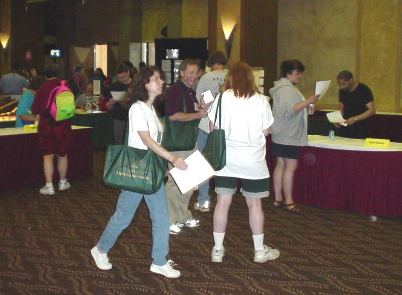
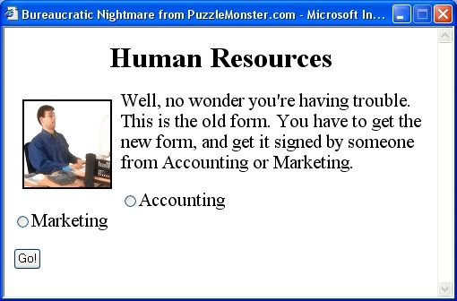
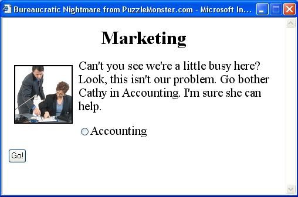

|
Interesting things are happening with this maze, and I think the easiest way to write about it is to put everything in chronological order. July 3, 2003: This was the first time I was first able to try the maze. It was at the Mensa Annual Gathering in St. Paul, Minnesota. Here is a picture from that event: |

|
Notice that it doesn’t look like a maze at all. It consists of five desks with a “bureaucrat” at each desk. The participants carry forms from desk to desk. (Also note the “bureaucrat” at the far right of the picture. That’s Oriel Maximé, who wrote the Java program for my Sliding Door maze.) When you enter the maze you are given a form that says, “Take this to the desk labeled Human Resources.” You look for the desk with the nameplate Human Resources, you hand in your form to the bureaucrat at that desk, and he gives you another form. This one says, “Take this form to Information Management or Marketing.” Hmm, there is now a choice. Let’s say you decide to go to Information Management. You hand in your form and receive one that says, “Take this form to Employee Benefits or Marketing.” You decide on Employee Benefits where you receive a form saying, “Take this form to Corporate Compliance or Human Resources.” This can go on for a long time, and you’re not told where the goal is or even what the goal is. But if you make enough right choices, you’ll get a form that says, “Congratulations, you solved the maze.” Here’s something else you aren’t told: Your current position in the maze does not just depend on what desk you’re going to. It depends on what desk you’re going to plus what desk you’re coming from. Most people eventually figure this out. Each of the five “bureaucrats” has four different sets of forms to give out, and the maze participants can come to his desk from any of four other desks. When a participant hands in a form, the bureaucrat looks at the form to see where it came from (this information is in a number that is buried in some bureaucratese on the form). The bureaucrat then gives the participant the proper form. As you can see, this maze uses a lot of resources. You need 50 copies (or more) of 22 different forms, you need five desks, and you need five volunteers to be the five bureaucrats. A sixth volunteer to be a “greeter” is a help, and even more volunteers might be a good idea to help get the forms back to the desks where they originated (in case the supply of forms runs low). So—how did this maze work out in practice? At the Mensa gathering it worked pretty well. There were about thirty participants. Half of them gave up fairly soon (that happens in most of my mazes) but the other half became fascinated and kept going until they solved it. The average time to solve the maze was 45 minutes. Most of those who stuck with it realized that they needed to take notes; so not only were there players carrying forms from desk to desk but there were players standing around scribbling notes. Also, the volunteers who acted as the bureaucrats all told me they had a lot of fun.
March 25, 2004:
The second time I tried the maze was on this date at the Gathering for Gardner convention in Atlanta. This is a convention of people involved with various forms of recreational mathematics. The maze again worked pretty well, but it wasn’t a big hit. One problem was that it was scheduled as an activity for early arrivals to the conference, and there weren’t too many early arrivals. In the room where the maze took place, there were people registering for the conference at one end, and at the other end people were putting together a very weird sculpture by George Hart. The desks for the five bureaucrats were scattered around the rest of the room. The maze fit well into this chaos (after all, the purpose of a maze is to create chaos), but only eight people entered the maze. Three of them solved it, and these three said it was great. One of the solvers, James Stephens, said the interaction with the others in the maze was interesting. He’d pass the same person again and again, and it seemed like neither of them was getting anywhere. Well, yes, that interaction is good, but there would have been a lot more interaction if more people had been in the maze.
I got an interesting comment from two people who did not solve the maze. They said they kept going around what appeared to be an endless loop (it really wasn’t, but all the false paths eventually send you back to Human Resources so you can start over). They figured that the maze intended to show that getting trapped in a bureaucracy is like being in an endless loop. Once they figured that out, they didn’t need to pursue the maze any further. Hmm. I never took the bureaucratic theme seriously; it was just something I added after I created the mechanism for the maze. But a lot of people do take this theme seriously. Maybe the maze could become more popular for its theme than for the puzzle aspects.
|
| June 2, 2004:
Eric Shamblen recently turned this concept into the Bureaucratic Nightmare, an on-line, interactive maze that is a lot of fun. A couple of screen shots are shown at the right. You can click here to get to his maze. When I first tried the maze, I laughed a lot. The descriptions are pretty hilarious. But after a while, the laughter died down and I began cursing the program. I just couldn’t solve the damn thing. Finally, I resorted to making a diagram. (Actually, everyone who solves my own Bureaucratic Maze does it by taking notes or making a diagram.) My first diagram got to be very confusing, so I started over and instead of writing down what was in each window, I printed the window. (The windows don’t have the print icon, but you can instead enter CTL-P.) I cut each window out of the printed page and Scotch taped them to a large, poster-size sheet of paper. I drew arrows from window to window. This turned out to be a fun activity, especially when it began to become clear what was going on in the maze. I finally got to the goal, and I realized the maze wasn’t as difficult as I first thought. Note: Eric recently changed the format of his maze; so it doesn’t use these pop-ups. Too bad! I really liked the pop-ups. He told me he’ll try another change in the future. |
  |
|
July 14, 2004:
So far, the Bureaucratic Maze has only been tried with people who are interested in puzzles, and even with them, it was pretty hard to solve. If there were an easier version of the maze, then maybe it could be used by non-puzzle people as, say, an icebreaker or an entertainment. An obvious way to create an easier maze would be to reduce the number of desk from five to four. I had tried this in the past, but the layouts I came up with just seemed trivial. Then I tried Shamblen’s Bureaucratic Nightmare. I had a hard time solving it, and after I diagramed the maze, I saw it was logically equivalent to a four-desk Bureaucratic Maze. So, obviously, a non-trivial, four-desk maze could be done. I went back to work on this idea and have come up with a pretty good layout. Actually I created two pretty good layouts: one is implemented with forms, and the other I turned into an on-line, interactive program. The program is just a way of simulating how the maze work; so the program is not as entertaining as Shamblen’s Nightmare. However, it provides a way to judge the difficulty of the the four-desk maze. You can click here to try the on-line program. Although I tried to make it easy, you’ll still probably have to resort to making a diagram in order to solve it. (By the way, if you start the program and just get a blank screen, try turning off your pop-up blocker.)
If you solve the four-desk program you can go on to an extra-hard, five-desk,
|
Wei-Hwa’s creation was used at the start of BANG7 (the 7th Bay Area Night Game). Every year some of the young computer geniuses of Silicon Valley spend a night solving puzzles and going on a sort of logical treasure hunt. Last year it began in the central courtyard of the Google corporate campus, which is shown at the right (note the weird architecture). The instructions for BANG7 had this statement: “Teams will begin the game in the order that they complete the registration process.” The process involved taking forms from table to table, and at first the participants assumed they were just registering for the games. After a while they got the disturbing feeling that things were going on for an awfully long time. The forms were also pretty strange: they gave you a choice. One read: “Please take this form to PAYMENTS or HINTS.” One nice touch I noticed on the forms is they had a bar code above the form number. Of course the bar code wasn’t actually used for anything. Eventually some of the teams realized they were in some sort of puzzle, and about half-way through they received a form that verified this and told them they were in a maze. Wei-Hwa wrote me that some people loved this idea, while others found the maze to be insanely frustrating. Wei-Hwa’s creation is now known as “The Registration Maze.” One nice feature of the maze is it actually performed its stated function: it registered the teams and collected the payments. But is also became the first puzzle of the night. Note—April 2, 2009: It’s hard to keep a web page up-to-date. I had a pointer to a fascinating description of what it was like to go through the Registration Maze. It was written by Larry Hosken, who was one of the participants, and he had put it on his web site. Unfortunately, that site has now disappeared. I went to the Way Back Machine to see if I could find the description in the past. I was successful, so here it is. |
|
August 8, 2005:
I received an e-mail from Gavin van Lelyveld in South Africa. He used the 4-desk maze with a youth group, and he wrote an entertaining description of his experience. He also provided some helpful suggestions. Here is his e-mail.
And what’s next?
Well I’m not really sure what’s next. I’d like to avoid running another Bureaucratic Maze myself, because I’m terrible at organizing anything. A couple of people have told me that they see ways this maze could be used and I’ve given them my permission to work on this. So maybe this will develop into something.
If you, yourself, would like to present the maze, then you have my permission. You might take a look at my detailed page about the Bureaucratic Maze. It has a more extended write-up and downloads of the forms. If you get anything to work, please let me know what happened. My e-mail address is
The Dungeon Mazes:
If you are thinking of using the Bureaucratic Maze as an entertainment at a convention, you might also look at my write-up of the Dungeon Mazes. One of these could also be used as an entertainment. The Dungeon Mazes and the Bureaucratic Maze seem to be nothing like each other, but they share a common mechanism. This is all explained at the end of the write-up in a section called History of the Dungeon Maze and the Bureaucratic Maze.
|